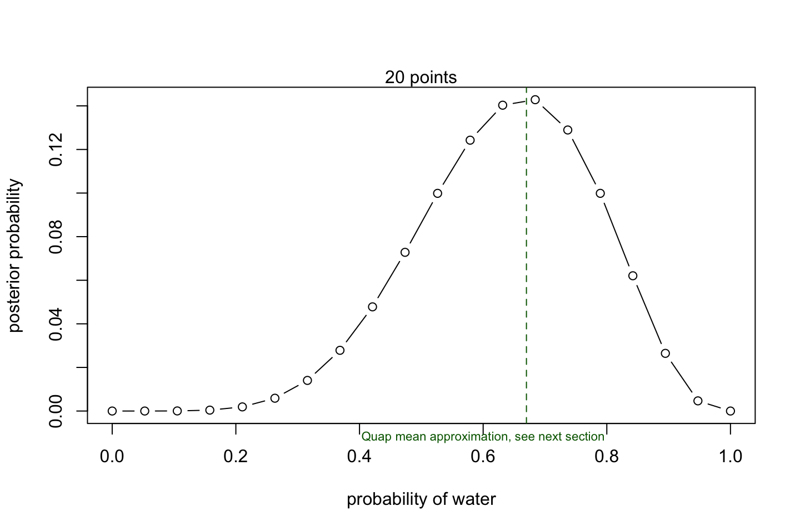

2 Models and Estimation
Introduction: We see that the Bayesian Data Analysis takes the approach of having a prior probability (the probability of an event happeining while ignoring the data we have at hand). Then we compute posterior probabilities as we introduce data.
The posterior probabilities can be seen as a relative count of how many ways a given outcome can be replicated out of the total.
The Bayesian Data Analysis can essentially be fitted with three different models:
1. Grid approximation: Good with few parameters
2. Quadratic approximation: Good with a moderate amount of parameters
3. Markoc Chain Monte Carlo: Outperforms other models in in a high parameter scenario
This is a section about models and estimation, based on chapter 1 - 3 from the book.
Some terminology:
Likelihood: This is just the relative number of ways that a given scenario can be produced. E.g., if you have discrete data, drawing marbles then the likelihood of some sequence is just the relative count of how you can construct such sequence.
Prior probability = prior plausability
Updated plausability = posterior probability
Assumptions when making the model
- Data story: Motivate the model by narrating how the data might arise.
- Update: Educate your model by feeding it the data. Basically the distribution for a given outcome is explored observation by observation. The more data we have seen the better should the distributions be.
- Evaluate: All statistical models require supervision, leading possibly to model revision.
#Code 2.2
dbinom(x = 6 #No. of 'successes' water in this case
,size=9 #No. of tosses
,prob=0.5 #Probability of a given outcome (succes)
) # = 0.1640625## [1] 0.1640625We see that the probability of getting 6 water (and 3 land) is 16%. Given that the probability of water is 50%. The 16% is equivilent to the relative number of ways that 6 water and 3 land can be found.
Notes in prior priobabilitieis. We see that oftentimes you only have one prior, and it can for instance be based on already seen data. Although a prior does not have to be based on that, one can test of different priors and see what that leads to.
2.1 Engines / Motors to estimate the models
We are going to apply three different engines to estimate the model.
2.1.1 Grid approximation
Here we use a grid of values to compute the likelihood of Water.
length = 20
# define grid
p_grid <- seq( from=0 , to=1 , length.out = length )
# define prior
prior <- rep( 1 , length )
# compute likelihood at each value in grid
likelihood <- dbinom(6 ,size=9 ,prob=p_grid )
# compute product of likelihood and prior
unstd.posterior <- likelihood * prior
# standardize the posterior, so it sums to 1
posterior <- unstd.posterior / sum(unstd.posterior)
#Plotting
plot(p_grid
,posterior
,type="b"
,xlab="probability of water"
,ylab="posterior probability" )
mtext( "20 points" )
abline(v = 0.67,lty = 2,col = "darkgreen")
mtext(text = "Quap mean approximation, see next section",side = 1,at = 0.6,col = "darkgreen",cex = 0.7)
So we see that the probability of picking 6 times water peaks around 60% to 70%.
The Grid approximation scales very badly, hence when you have a model with many variables it starts to get cumbersome to estimate. That is the reason that we go to quadratic approximation.
2.1.2 Quadratic approximation
The quadratic approximation is basically utilizing Guassian (normal) distribution
library(rethinking)
globe.qa <- quap(
alist(
W ~ dbinom( W+L ,p) , # binomial likelihood
p ~ dunif(0,1) # uniform prior
) ,
data=list(W=6,L=3) )
# display summary of quadratic approximation
precis( globe.qa )
|
|
|
|
We see that the mean is 0.67, hence the highest prior, this level is also inserted in the illustration above, to show that we end up in approximately the same place. Then the standard deviation (sd) is the spread en then the confidence intervals are shown.
2.1.3 Markov Chain Monte Carlo
This sections does not yet go in detail with MCMC. Although the key takeaway is that quadratic approximation is also cumbersome and to some extent impossible when you have a lot of parameters. Therefore MCMC can be used instead.
The following is a toy example with the same data:
#R Code 2.8
n_samples <- 1000
p <- rep( NA , n_samples ) #Samples from the posterior distribution
p[1] <- 0.5 #Posterior
W <- 6 #Successes (Water)
L <- 3 #Non successes (Land)
for ( i in 2:n_samples ) {
p_new <- rnorm( 1 , p[i-1] , 0.1 )
if ( p_new < 0 ) p_new <- abs( p_new )
if ( p_new > 1 ) p_new <- 2 - p_new
q0 <- dbinom( W , W+L , p[i-1] )
q1 <- dbinom( W , W+L , p_new )
p[i] <- ifelse( runif(1) < q1/q0 , p_new , p[i-1] )
}
dens( p , xlim=c(0,1) )
curve( dbeta( x , W+1 , L+1 ) , lty=2 , add=TRUE )